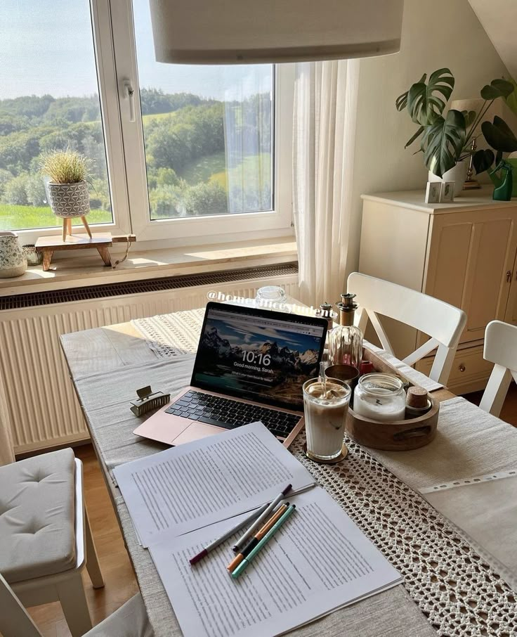

Welcome to My Blog: What You’ll Find Here
Posted on: March 1, 2025 by Damaris' - Blog
Hi, I'm Damaris, and I started this blog to share my journey in life. Here's what you can expect from my posts:
- Who I Am
- Why I Started This Blog
- What You Can Expect (lifestyle,healty life,book recommendations,posts twice a week)
- Let’s Connect: follow me on my other socials(more in my contact section)
5 Life-Changing Productivity Hacks I Swear By
Posted on: February 28, 2025 by Damaris' - Blog

Here are five productivity tips that helped me get more done:
- The Pomodoro Technique: 25-minute work sessions with short breaks.
- Morning Routines: Start your day with energy-boosting activities.
- Notion/Trello: Use these tools to stay organized and on track.
- The 2-Minute Rule: If a task takes less than two minutes, do it now.
- Digital Detox: Limit screen time to stay focused.
10 Healthy Food Ideas to Boost Your Energy
Posted on: February 25, 2025 byDamaris' - Blog
Looking for some healthy food inspiration? Here are 10 ideas to fuel your body and boost your energy:
- Avocado Toast with Eggs: A nutritious breakfast to start your day.
- Quinoa Salad: Packed with protein and perfect for lunch.
- Chia Seed Pudding: A healthy dessert or snack, full of fiber.
- Veggie Stir Fry: A colorful dish loaded with vitamins and minerals.
- Greek Yogurt with Berries: A quick, refreshing snack that’s full of probiotics.
- Sweet Potato and Black Bean Tacos: A delicious, filling dinner option.
- Green Smoothie: Blend spinach, banana, and almond milk for a nutrient-packed drink.
- Oatmeal with Almond Butter: A warm, hearty breakfast that’ll keep you satisfied.
- Grilled Chicken Salad: Lean protein and fresh veggies, great for lunch or dinner.
- Homemade Hummus and Veggies: A healthy, satisfying snack for any time of day.
The 2025 Guide to AI Tools Everyone Should Try
Posted on: February 20, 2025 by Damaris' - Blog
Here are some of the latest AI tools you should check out:
- ChatGPT: For writing, brainstorming, and research.
- Canva AI: Design graphics easily with AI assistance.
- Grammarly: Improve your writing with AI-powered suggestions.
- Pictory AI: Turn your text into video content.
- Notion AI: Boost productivity with AI-powered notes and task management.
10 Must-Read Books That Changed My Life
Posted on: February 15, 2025 by Damaris' - Blog
Here are some books that have had a profound impact on my life:
- Atomic Habits by James Clear: A guide to building good habits.
- The 4-Hour Workweek by Tim Ferriss: Productivity and lifestyle design.
- Deep Work by Cal Newport: How to focus deeply in a distracted world.
- The Subtle Art of Not Giving a F*** by Mark Manson: A new take on personal growth.
- Sapiens by Yuval Noah Harari: A thought-provoking exploration of human history.